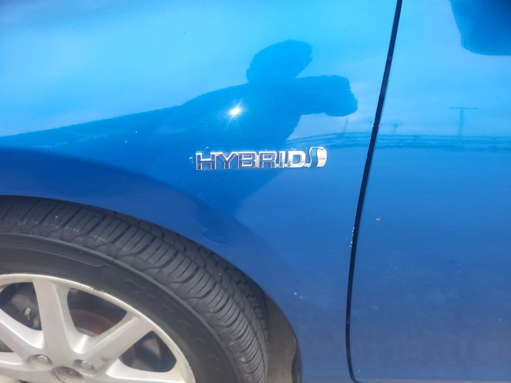
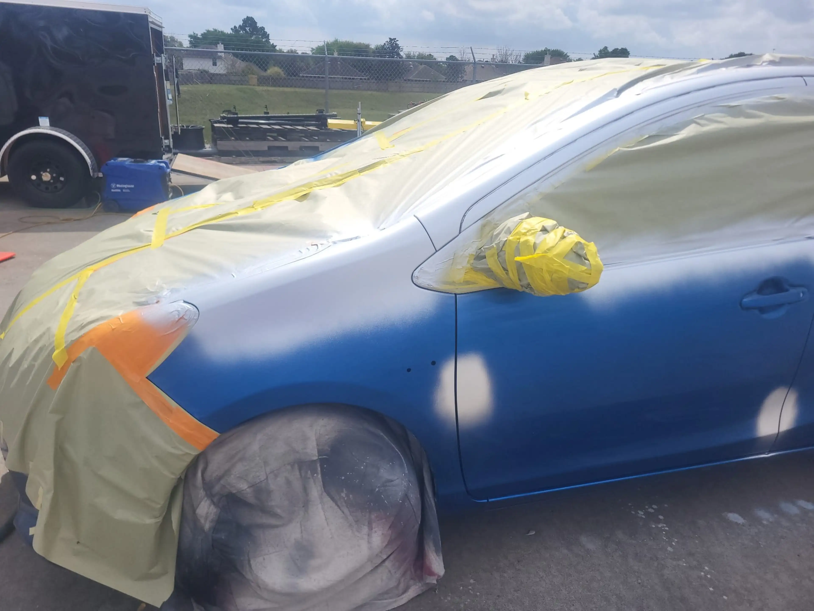
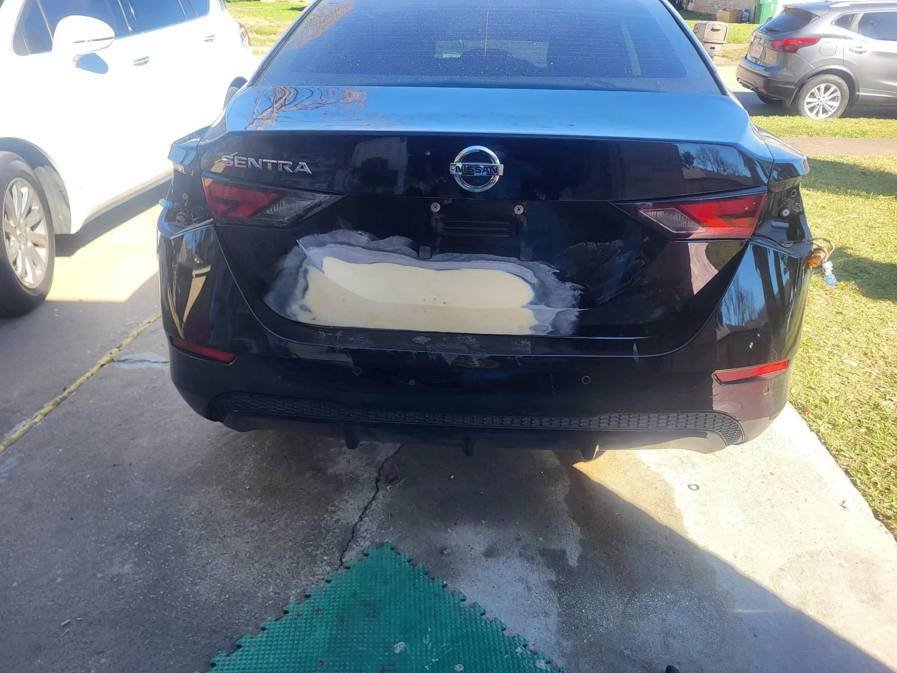
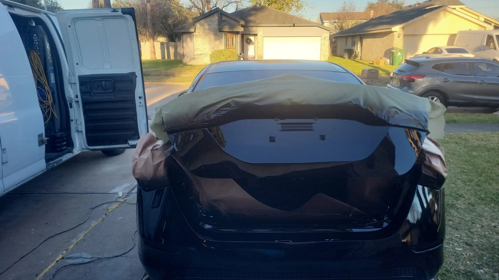
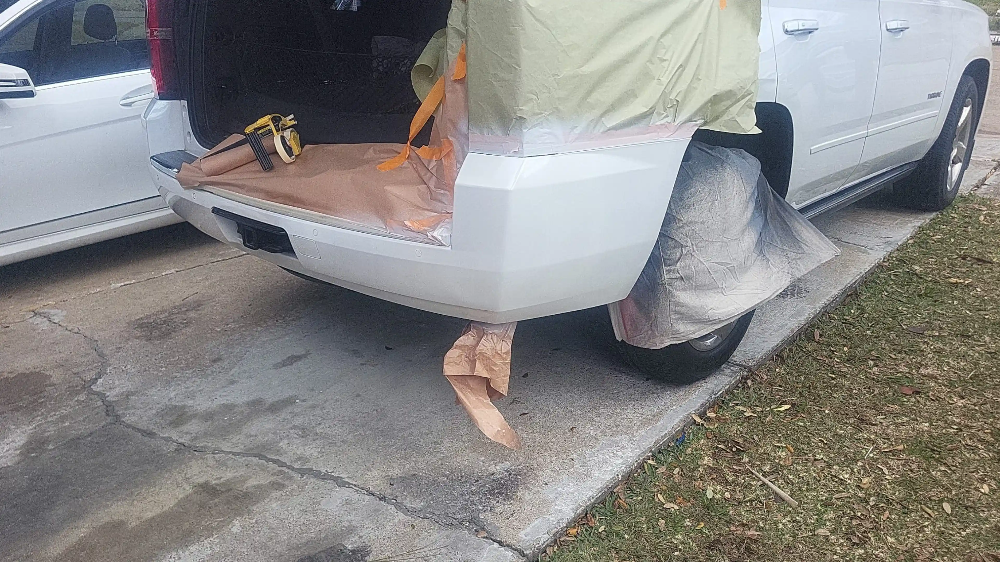
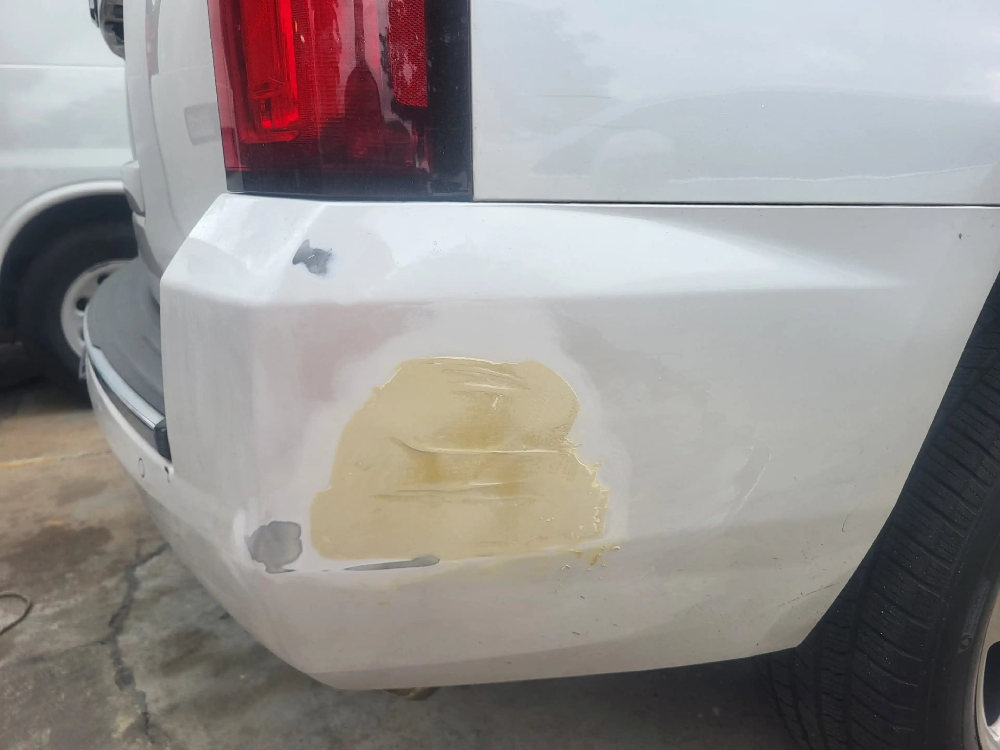
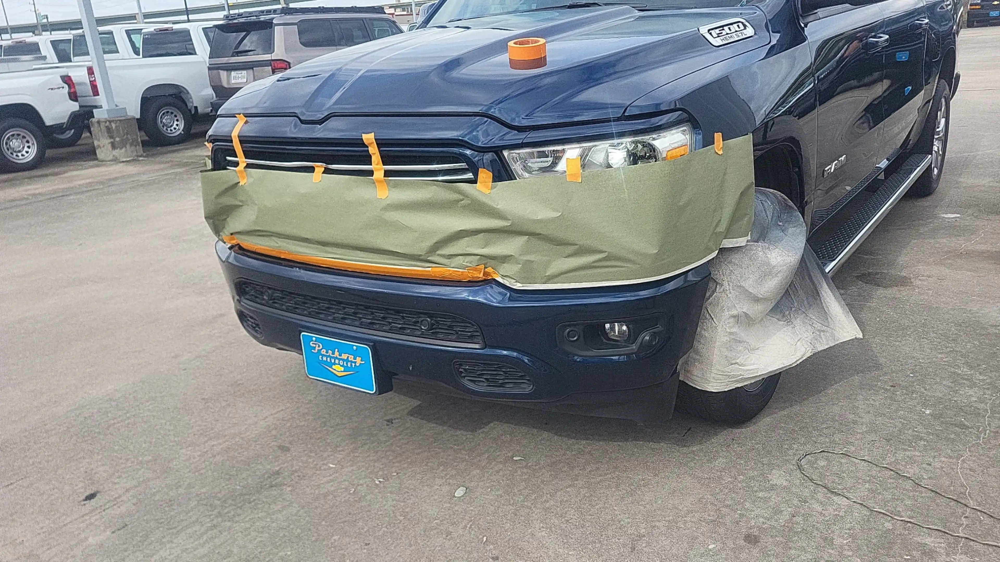
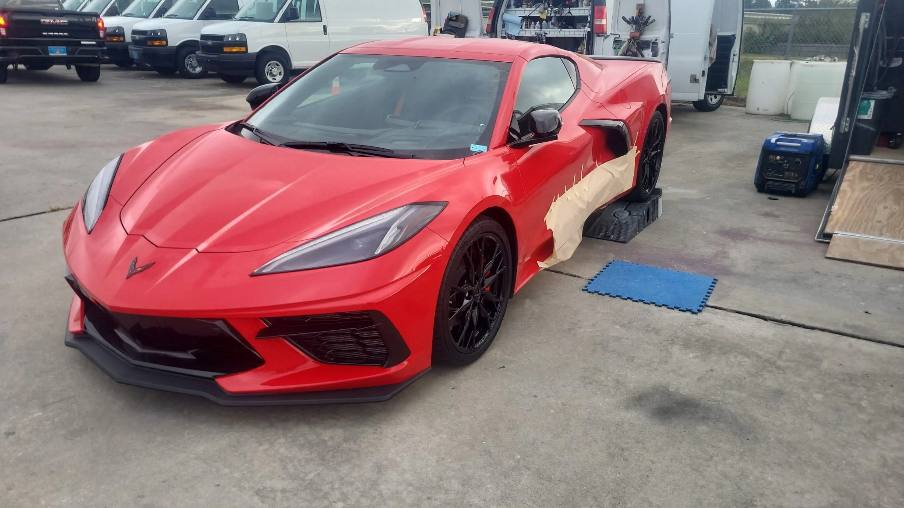
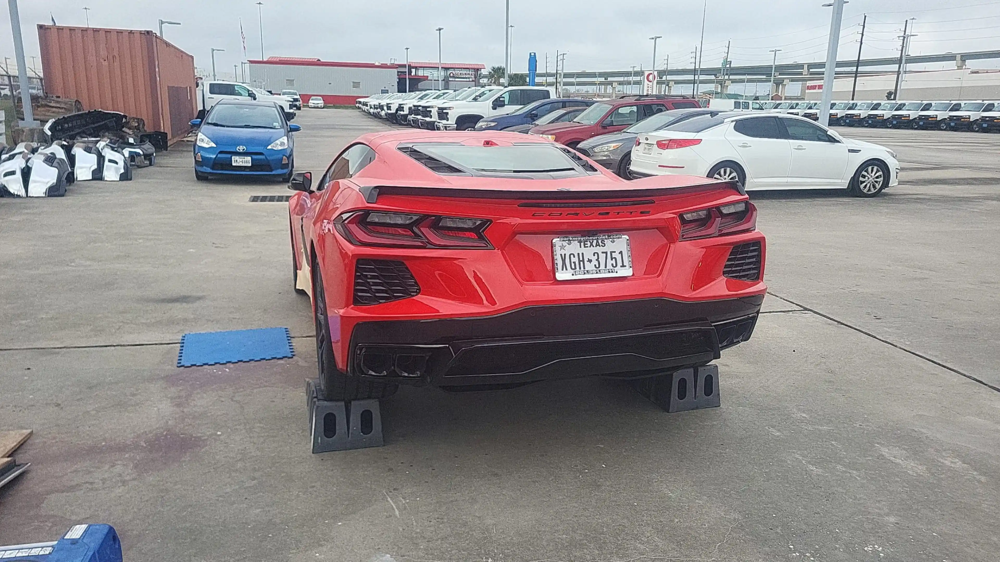

Reparación Cosmética Móvil en Houston, TX
SPR Cosmetic Repair Mobile: Reparación Móvil de Rayones, Abolladuras, Bumper y Pintura Automotriz
¿Tu auto tiene rayones, abolladuras, pintura dañada o el bumper golpeado? En SPR Cosmetic Repair Mobile llevamos el servicio hasta ti para ayudarte con reparación cosmética automotriz en Houston, Katy, Humble, Conroe y áreas cercanas.
Servicio Móvil
Reparación de Rayones
Abolladuras
Reparación de Bumper
Servicios de Reparación Cosmética
Reparación Móvil de Rayones, Abolladuras, Bumper y Pintura Automotriz en Houston
SPR Cosmetic Repair Mobile se enfoca en daños cosméticos del vehículo: rayones, golpes pequeños, abolladuras, pintura dañada, bumper golpeado y detalles exteriores que afectan la apariencia de tu auto.

Reparación Cosmética Móvil
Servicio móvil para reparar detalles exteriores, daños visibles y problemas cosméticos en la carrocería.

Pintura Automotriz
Reparación de pintura dañada, retoques, rayones visibles y restauración del acabado exterior.

Reparación de Abolladuras
Reparación de golpes pequeños, abolladuras menores y daños comunes por estacionamiento.

Reparación de Bumper
Reparación de bumpers rayados, golpeados, raspados o dañados por impactos menores.

Reparación de Rayones
Corrección de rayones ligeros, rayones profundos, marcas en pintura y daño cosmético exterior.

Restauración Exterior
Servicios para mejorar la apariencia del vehículo y recuperar un acabado más limpio y profesional.

Por Qué Elegirnos
Reparación Cosmética Móvil con Estimados Claros, Servicio Conveniente y Atención Rápida
Llevar el auto a un taller no siempre es conveniente. Por eso SPR Cosmetic Repair Mobile ofrece una opción práctica para reparar daños cosméticos sin complicarte tanto el día.
- Servicio móvil en Houston y alrededores
- Estimado gratis antes de comenzar el trabajo
- Reparación de rayones, abolladuras, bumper y pintura dañada
- Atención para Houston, Katy, Humble, Conroe y zonas cercanas
- Formulario simple para solicitar una cotización rápidamente
Servicio Móvil
Reparamos Daños Cosméticos Donde Más te Convenga
SPR Cosmetic Repair Mobile ofrece servicio móvil para clientes que necesitan reparar rayones, abolladuras, bumper o pintura dañada sin depender de llevar el vehículo a un taller tradicional. Puedes solicitar un estimado y compartir fotos del daño para entender mejor el servicio que necesitas.
Qué Preparar
- Fotos claras del daño del vehículo
- Año, marca y modelo del auto
- Ubicación o área donde necesitas el servicio
- Tu número de teléfono para coordinar el estimado
Proceso Simple
Cómo Obtener tu Estimado de Reparación Cosmética Móvil
El proceso está diseñado para ser rápido, claro y conveniente desde el primer contacto.
Envía Fotos
Comparte fotos del daño usando el formulario o llama para solicitar un estimado.
Recibe Orientación
Revisamos el daño y te explicamos qué tipo de reparación cosmética puede necesitar tu vehículo.
Agenda el Servicio
Coordinamos el área, horario y detalles del servicio móvil según disponibilidad.
Reparamos tu Vehículo
Realizamos el servicio para mejorar la apariencia exterior de tu vehículo.
Áreas de Servicio
Reparación Cosmética Móvil en Houston, Katy, Humble, Conroe y Alrededores
SPR Cosmetic Repair Mobile atiende clientes en Houston y diferentes zonas cercanas. Al ser un servicio móvil, también podemos cubrir áreas alrededor según ubicación y disponibilidad.
Houston, TX
Body shop móvil Houston, reparación de rayones Houston, reparación de bumper Houston.
Katy, TX
Reparación cosmética móvil en Katy, reparación de abolladuras Katy, pintura automotriz Katy.
Humble, TX
Reparación móvil de carrocería en Humble, rayones, bumper y abolladuras.
Conroe, TX
Reparación cosmética móvil en Conroe, pintura automotriz, rayones y daños exteriores.
Antes y Después
Resultados Reales en Reparación Cosmética Automotriz
Trabajos reales de SPR Cosmetic Repair Mobile, mostrando reparaciones cosméticas, retoques de pintura y mejoras visibles realizadas directamente en el lugar del cliente.
Solicitar Estimado de Reparación

Preguntas Frecuentes
Preguntas Comunes Sobre Reparación Cosmética Móvil en Houston
¿Qué tipo de daños repara SPR Cosmetic Repair Mobile?
Reparamos daños cosméticos como rayones, abolladuras menores, bumper dañado, pintura afectada y detalles exteriores que afectan la apariencia del vehículo.
¿El servicio es realmente móvil?
Sí. SPR Cosmetic Repair Mobile ofrece servicio móvil en Houston, Katy, Humble, Conroe y alrededores, según ubicación, tipo de reparación y disponibilidad.
¿Reparan rayones y abolladuras?
Sí. La reparación de rayones, abolladuras, bumper y pintura dañada son servicios principales.
¿Cuánto cuesta reparar un rayón o abolladura?
El precio depende del tamaño del daño, ubicación, condición de la pintura y tipo de reparación necesaria. La mejor forma de saberlo es solicitar un estimado con fotos claras del daño.
¿Atienden solo Houston, Katy, Humble y Conroe?
No. También se pueden atender zonas cercanas y alrededores dependiendo de la ubicación y disponibilidad del servicio móvil.
Estimado Gratis
Solicita tu Estimado con SPR Cosmetic Repair Mobile
Cuéntanos qué pasó, describe el daño o envía fotos del vehículo. Te ayudamos a entender qué reparación cosmética puede necesitar tu auto y si el servicio móvil aplica para tu caso.
Teléfono: (832)643-6418
Área de Servicio: Houston, Katy, Humble, Conroe y alrededores
Servicios: Rayones, abolladuras, pintura, bumper y reparación cosmética móvil